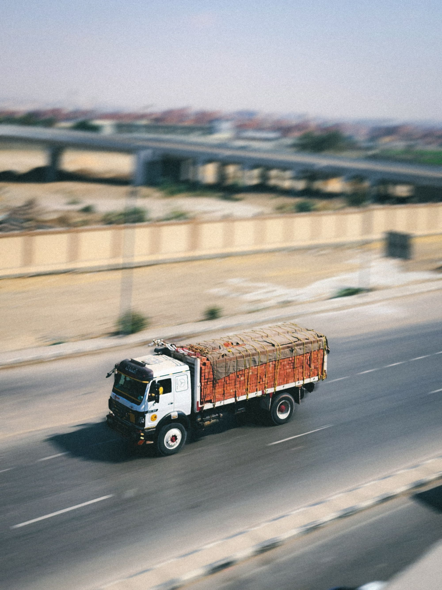

лет в грузоперевозках
Доставляем без лишней неопределённости
Груз приходит вовремя
Бизнес идёт дальше
Автомобильные перевозки по России и СНГ: от малогабаритных отправлений до сложных негабаритных маршрутов.

РТК держит маршрут под контролемЕдиная точка связи от заявки до закрывающих документов.
Компания
Опыт, который измеряется маршрутами
успешных рейсов по России и СНГ
км — самый длинный выполненный рейс
рублей — страхование груза
Услуги
Подбираем транспорт под задачу
Тентовые перевозки
Универсальное решение для паллет, оборудования и большинства промышленных грузов.
↗Рефрижераторы
Температурный режим на всём маршруте для продуктов, сырья и чувствительных товаров.
↗Негабаритные грузы
Проработка маршрута, подбор платформы и сопровождение сложных перевозок.
↗Малогабаритный груз
Отдельная машина или догруз — без переплаты за незанятое пространство.
↗География
Россия и СНГ — одна рабочая карта
Центральный офис в Липецке координирует маршруты между крупными промышленными и распределительными центрами.
Рассчитать свой маршрут ↗Маршрут начинается с разговора
Отдел логистики+7 (4742) 203-777office@gkrtk.ru